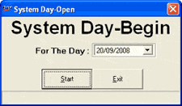
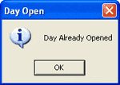

The OPEN Day or Day-Open process is usually executed at the beginning of the day to start billing, Goods Inward entry or other Shoper 9 POS transactions.
The Shoper date can be different from the system date. This date cannot be greater than the system/ machine date. Shoper date will be the succeeding date of the Shoper close date. All transactions, price revisions etc., are controlled by Shoper date. The active promotions for the day (if applicable), price revisions (if applicable) and other activities are done during the Day Open process.
If the operation is starting after a few days, you have to open and close the day for every day in between as it is not possible to key-in the open date.
The day open operations for the first working day of the month need not necessarily be the first date of a month and the opening process time taken would be little longer because the month begin operations also would be performed. This includes, computation of balances, consistency checking, etc. If the closing balance of the previous month is not matching with the current balance, then a message will be displayed requesting you to rebuild the data.
Note: When you execute Day Open process the Shoper date is incremented by one day
How to reach: Housekeeping > OPEN Day
The System Day-Begin is displayed.

This process can be executed only after executing the CLOSE Day process.
If you try to execute Day Open process without running the Day End option then the following message is displayed.

Note: To refresh the Shoper date in the status bar of the Shoper main menu, invoke any option.